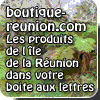
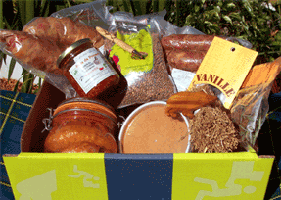

De l'hébergement à la cuisine, il n'y a qu'un pas que les guides de tourisme franchissent en un paragraphe. Je vais faire de même.
Les touristes à la réunion auront le choix pour goûter
aux différents plats créoles de la cuisine réunionnaise. Par contre pour
les 200.000 réunionnais expatriés et les autres les autres amateurs de caris
de rougails et de boucané, il est parfois difficile de trouver les
différents ingrédients pour cuisiner créole.
Le site Goutanou que je présentais en 2002 avait donné envie à beaucoup de
lecteurs de s'approvisionner en salaisons péi ce qui ne pouvais être fait
que si l'on avait des amis ou de la famille faisant le voyage. La vente par
correspondance semble être une solution et la vente sur le web la solution
la plus simple. Pourtant, les producteurs que j'ai rencontré au salon de
l'agriculture (en découvrant bienvenue à la ferme) ne proposait que de piètre sites ou même aucun site web. Quand on voit parfois le besoin que certains producteurs ont de se faire connaître, on ne peut que regretter l'absence de site digne de ce nom.

Ce vide a donné l'idée à un RMIste de la Réunion de mettre en place une
boutique en ligne qui vendrait les produits de différents artisants
producteurs de l'île de la Réunion. Emmanuel Coeffier et Pascal Aubry ont donc créé une
association qui a mis en place le site de boutique réunion
(aujourd'hui disparu). Que le nombre
de boutons ne vous rebutent pas, il y a possibilité de chercher ses produits
par famille ou par producteur. Le principe est simple : vous avez
deux tailles de colissimo, donc deux tarifs de frais d'envoi. Il vous suffit ensuite de remplir votre panier jusqu'à ce que le coli soit plein.
Il y a aussi la possibilité de demander des
produits qui ne sont pas au catalogue, un forum est là pour répondre à
toute demande. Grâce aux idées des clients, le site propose aujourd'hui des
lentilles de Cilaos et bientôt des pendentifs en forme d'île (de la Réunion
biensûr).
Cette initiative ne peut que satisfaire tout le monde, du producteur péï au
consommateur lointain. Quand on voit le succès des colipays
grâce à leur force marketing, on a envie de souhaiter le même succès à Emmanuel Coeffier et
son équipe.
Cette boutique a hélas disparue. Ma rubrique sur les produits pays est bien triste mais elle propose d'autres offres.